1. INTRODUÇÃO
Este trabalho foi desenvolvido para a disciplina de Sistemas Distribuídos com o objetivo de aplicar conceitos fundamentais de sincronização de relógios, conteinerização, virtualização e análise de protocolos de rede.
As atividades práticas realizadas foram:
- Sincronização de relógios utilizando servidor NTP nos sistemas Windows 10 e Linux (WSL)
- Orquestração de contêineres com Docker Swarm (5 réplicas do servidor Apache)
- Análise de tráfego de rede com o Wireshark
- Criação de máquina virtual com Oracle VirtualBox
Foi utilizado o Windows 10 como sistema operacional base, WSL (Windows Subsystem for Linux) para os comandos Linux e Docker Desktop para a orquestração dos contêineres.
2. DESENVOLVIMENTO
2.1 Sincronização de Relógios com NTP
No Windows 10:
Abri o Prompt de Comando (CMD) como Administrador e executei os seguintes comandos:
w32tm /config /syncfromflags:manual /manualpeerlist:0.pool.ntp.org net stop w32time net start w32time w32tm /resync /rediscover
Estes comandos configuram o servidor NTP, reiniciam o serviço de horário e forçam a sincronização.
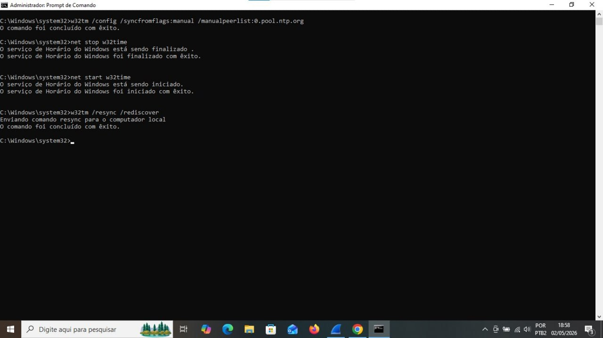
No Linux (WSL/Ubuntu):
Acessei o terminal do Ubuntu via WSL e executei:
sudo apt update sudo apt install ntp -y
Em seguida, editei o arquivo de configuração /etc/ntp.conf substituindo os pools padrão por:
pool pool.ntp.br iburst
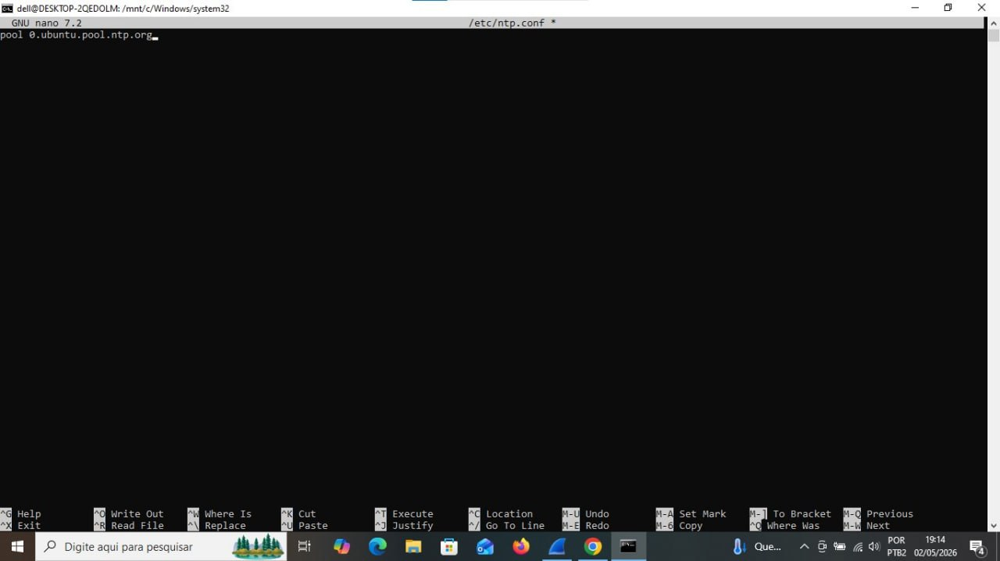
Reiniciei o serviço e verifiquei a sincronização:
sudo service ntp restart ntpq -p
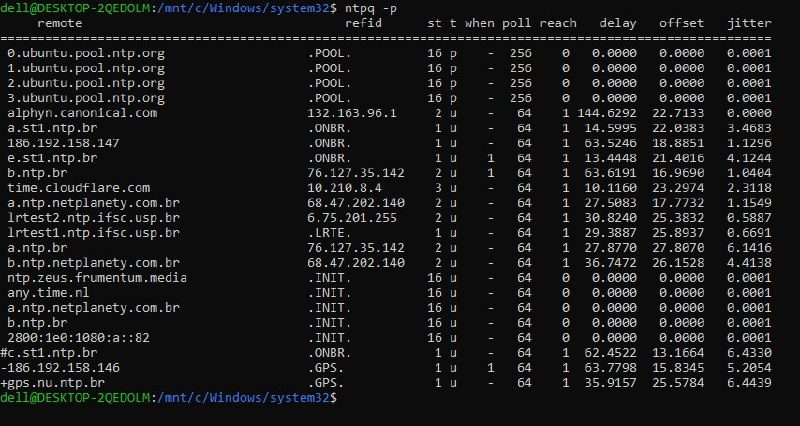
2.2 Conteinerização com Docker
Inicializei o cluster Docker Swarm:
docker swarm init
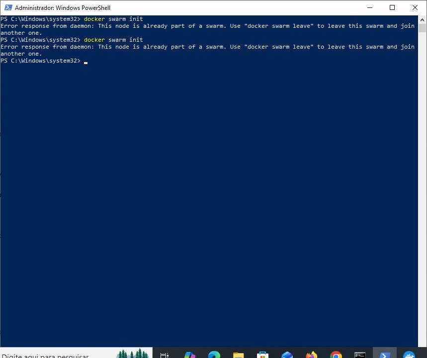
Criei um serviço chamado "WEB" com 5 réplicas do servidor Apache:
docker service create --name WEB --publish 80:80 --replicas=5 httpd
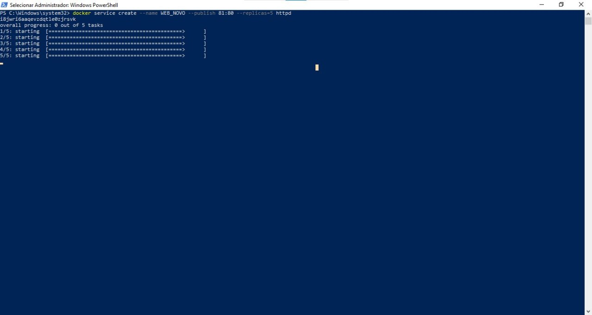
Verifiquei as 5 réplicas rodando:
docker service ps WEB
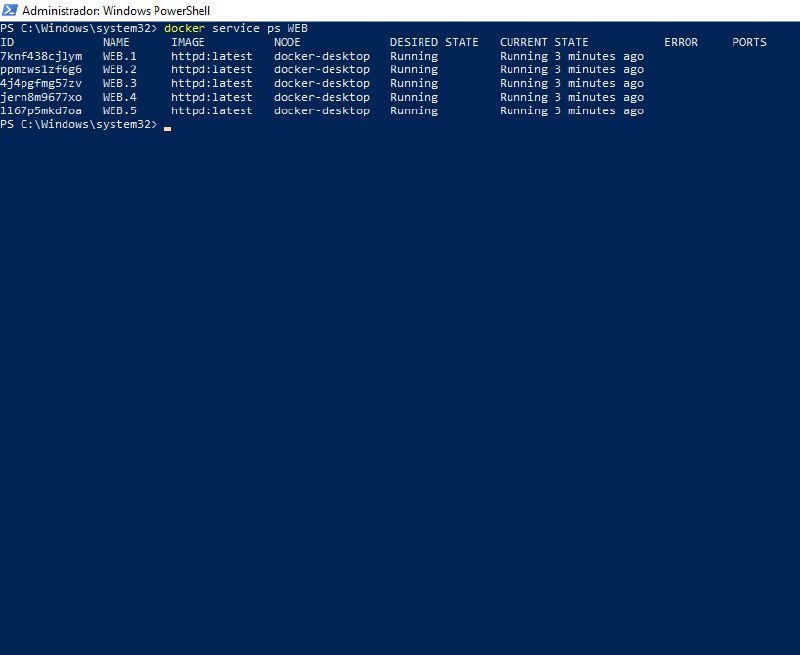
Testei o servidor Apache no navegador acessando http://localhost:
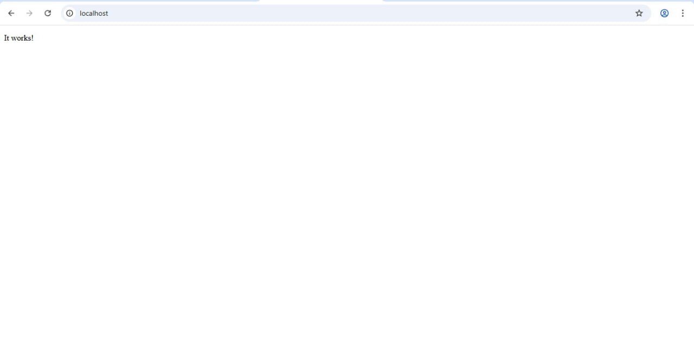
2.3 Análise de Protocolos com Wireshark
Baixei e instalei o Wireshark no site oficial (https://www.wireshark.org). Após a instalação, reiniciei o computador para ativar o driver Npcap.
Abri o Wireshark como Administrador e iniciei a captura de pacotes na interface Wi-Fi.
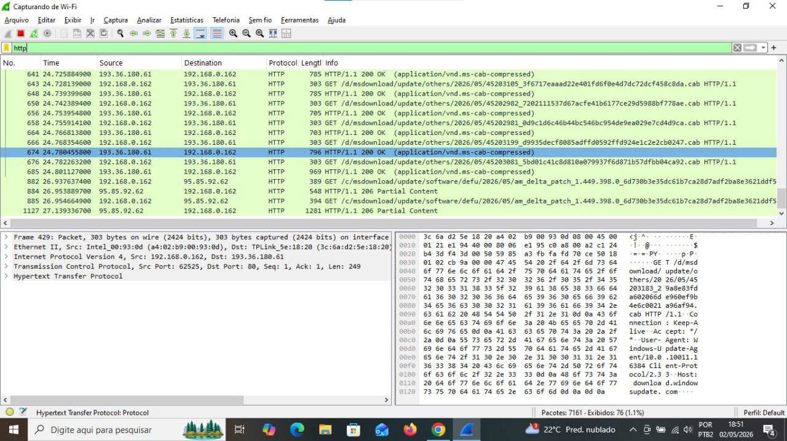
Apliquei o filtro "http" para visualizar apenas o tráfego web.

2.4 Virtualização com VirtualBox
Baixei e instalei o Oracle VirtualBox no site oficial (https://www.virtualbox.org).
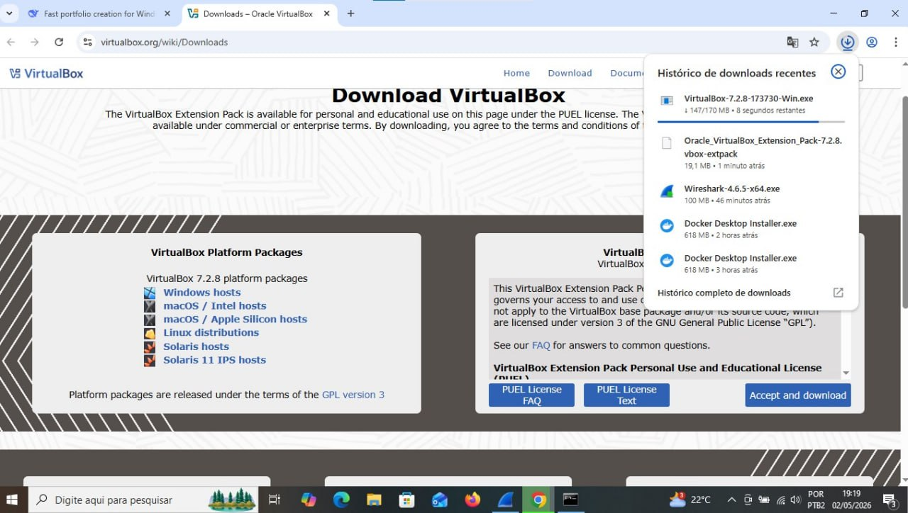
Criei uma nova máquina virtual com as seguintes configurações:
- Nome: MinhaVM
- Tipo: Linux
- Memória RAM: 2GB (2048 MB)
- Disco rígido: 25GB
- ISO: Ubuntu 22.04 LTS
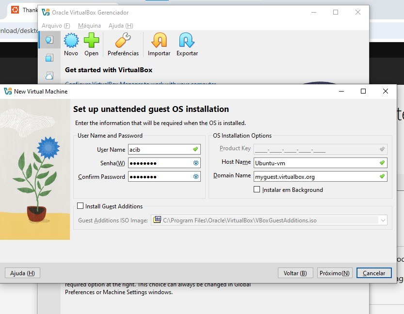
Iniciei a máquina virtual e realizei a instalação do sistema operacional Linux.
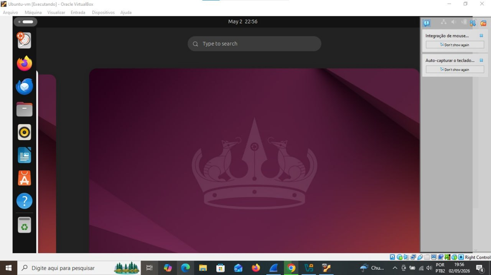
3. RESULTADOS
Todas as atividades práticas foram concluídas com sucesso.
NTP: A sincronização de relógios foi configurada tanto no Windows quanto no Linux, utilizando o servidor pool.ntp.br. O comando ntpq -p confirmou a comunicação com os servidores de horário.
Docker: O cluster Swarm foi inicializado com sucesso. O serviço WEB foi criado com 5 réplicas do Apache, e todas as 5 instâncias ficaram com STATUS "Running". O navegador exibiu a página "It works!", comprovando o funcionamento do servidor web orquestrado.
Wireshark: O analisador de protocolos capturou os pacotes de rede corretamente, permitindo visualizar o tráfego HTTP e aplicar filtros para análise específica.
VirtualBox: A máquina virtual foi criada e o sistema operacional Linux foi instalado com sucesso, demonstrando o conceito de virtualização.
4. CONCLUSÃO
Através deste trabalho prático, compreendi os fundamentos de Sistemas Distribuídos, incluindo:
Sincronização temporal (NTP): essencial para serviços como autenticação e acesso remoto, evitando falhas causadas por diferenças de horário entre máquinas.
Conteinerização e orquestração (Docker Swarm): permite criar serviços distribuídos com múltiplas réplicas, garantindo escalabilidade e alta disponibilidade.
Análise de protocolos (Wireshark): ferramenta fundamental para monitoramento e troubleshooting de redes.
Virtualização (VirtualBox): possibilita executar múltiplos sistemas operacionais em um único hardware, otimizando recursos.
O projeto me mostrou a importância dos sistemas distribuídos no cenário atual da computação, onde serviços precisam ser escaláveis, confiáveis e eficientes. Todos os objetivos de aprendizagem foram alcançados com sucesso.
LISTA DE FIGURAS
Figura 1 - CMD com os 4 comandos NTP executados
Figura 2 - Arquivo ntp.conf editado
Figura 3 - Comando ntpq -p mostrando a sincronização
Figura 4 - Comando docker swarm init
Figura 5 - Comando docker service create
Figura 6 - docker service ps WEB mostrando 5 réplicas
Figura 7 - Navegador mostrando a página "It works!"
Figura 8 - Wireshark capturando pacotes
Figura 9 - Wireshark com filtro http aplicado
Figura 10 - Download do VirtualBox
Figura 11 - Configuração de hardware da VM
Figura 12 - VM rodando com instalação do Linux
Universidade UNOPAR - Análise e Desenvolvimento de Sistemas
Sistemas Distribuídos - 2025